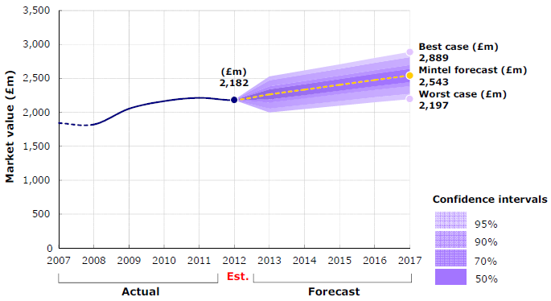
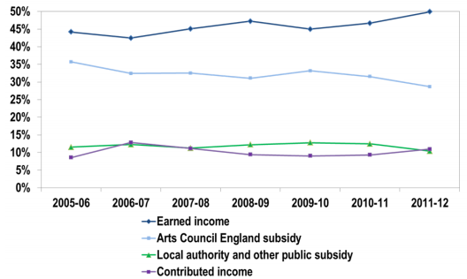
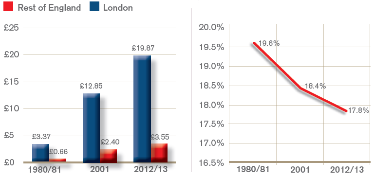
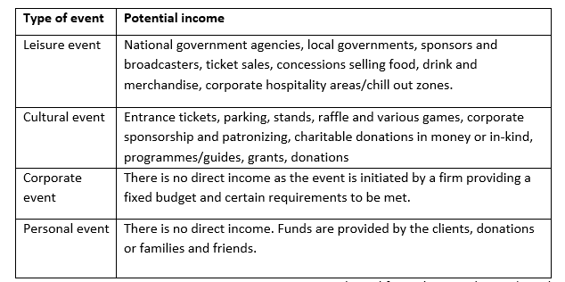
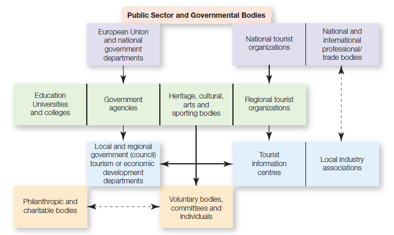
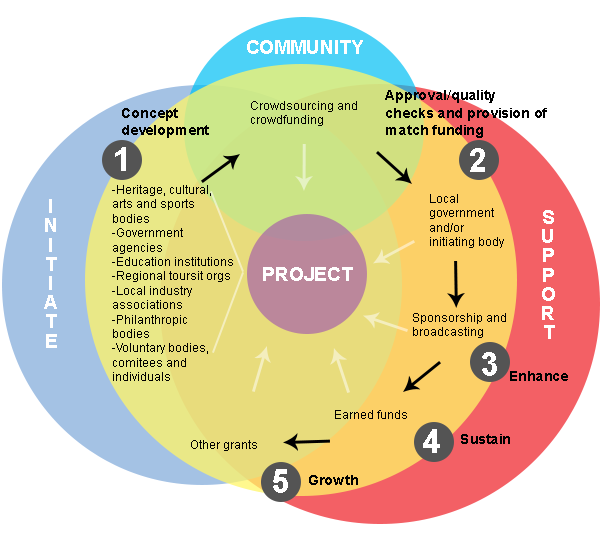

Performing arts industry including cultural and community events has many challenges to overcome as well as some opportunities to exploit. According to the report provided by Oliver (2012), the arts industry has experienced major funding cuts made by coalition government that in turn fostered creative bodies, previously reliant on public support, to look for new income streams. The report suggests that altered focus may be a decent start - general public in more rural areas expressed an interest in arts accessible to a more diverse target audience with the performances taken out of their traditional settings. (Oliver, 2012) In this context new technologies may come in handy, broadening distribution channels and accessibility to general public thus reducing reliance on central funding and box office ticket sales. (Oliver, 2012) However it must be kept in mind that due to poor economic growth, domestic incomes are still hindered affecting people’s buying power. Another previously well exploited income stream – according to Oliver (2012) report – is that tourists from overseas may decline in numbers because of Euro crisis strengthening the Pound. This may lead to an increase of internal travellers who could replace the former income source if targeted correctly. In general Oliver (2012) predicts that a few upcoming years will remain tough for art industries thus deepening cuts for their budgets. Moreover he claims that the accessibility and inclusiveness will be main factors defining the amount of public funding available. As Oliver (2012: p.6) put it “art for art’s sake will become a less common feature”.

Figure 1. UK Performing Arts Market. Source: Oliver (2012).Despite mundane economic realities the interest in arts should be kept positive due to several reasons. According to Centre for Economics and Business Research (2013) (CEBR) public support may foster creative innovations thus eliminating the need for creative entities to be commercially successful. It may in turn attract more attention from the business sector thus removing the burden from public shoulders. Moreover, the arts and culture industry may allow young talents to create and showcase their work as well as their creative capacity using provided incubators at early stages of their development as professionals (CEBR, 2013). This may create more competitiveness in international markets. Finally, local investments into art projects may serve as an economic regeneration strategy in post-industrial locations (CEBR, 2013). Economic value of performing arts industry in UK can be seen in Figure 1.
According to Arts Council England (ACE) creative industries generate their income from three major sources: earned funds, for example merchandise and ticketing; public funding, including grants from public bodies; and contributed income, such as sponsorship and fundraising. (CEBR, 2013) According to the annual report provided by ACE art organisations in UK more strongly rely on their earned income rather than public support or contributed funds. ACE has done a research on regularly funded organisations and found that 29% of income is provided by ACE, 12% is gained from other public subsidy (local government support), 11% stand for contributed income (donations) and 49% is earned income (ticket sales). (ACE Report, 2013) Fluctuations of funding streams can be seen in Figure 2. ACE claims that during 2012/13 their initiatives such as: Grants for Arts funded 2,741 artistic projects, National Portfolio funding helped 696 organisations, Strategic Funding invested in around 1000 artistic projects, Renaissance programme supported 227 museums, Libraries Development Initiative funded 59 libraries and Cultural Olympiad investment of £36m during four years delivered 5,370 works involving 40,464 artists. There are some other fairly positive figures encompassing funds for other initiatives which can be studied in detail in their annual report. These deliverables are made through various cooperating organisations and hard work of determined individuals.

Figure 2. Income streams for creative arts. Source: CEBR (2013).Despite all fairly neutral or maybe positive information stated above it is about time to face the ‘ugly truth’. Empirical report implemented by Stark et al. (2013) states that 75% of public funds provided for the arts are allocated by the same ‘central’ authority. For example in Germany local politicians instead of federal government take the role of decision making where local conditions determine the volume of public funding. (Schulze and Rose, 1998) The report by Stark et al. (2013) also claims that 90% of all available funds or £450m provided by Department of Culture Media and Sport (DCMS) directly benefited the London area. In other representation of these figures it can be seen that Arts Council combined with DCMS provided £68.99 per head in London compared to £4.58 in other regions of England. Moreover it is claimed that 82% of private investors’ funding for arts was directed towards London based enterprises with £18.5m (61%) of first Catalyst Programme funds being directed to London as well. (Stark et al., 2013) Art council has responded positively to Stark’s et al. (2013) report making several changes in their funding system.

Figure 3. ACE spending £ per person and Trend of ACE spending outside capital as a % of total spend. Source: Stark et al. (2013).The field of events management lacks a sophisticated analysis of financial instruments involved to generate seed capital for events. (Getz, 2007) However it is clear that financial issues are the main cause of event and corporate failures. (Bowdin et al., 2011; Getz, 2012) Most of the authors in events management literature stress the significance of sourcing, monitoring and reporting on money flows of the event. (O’Toole and Mikolaitis, 2002; Allen, 2008; Goldblatt, 2008; and Bowdin et al., 2011) Otherwise problems may include difficulties in: obtaining profits from non-ticketed events, sustaining balanced cash flow, identifying additional income streams, obtaining sponsorship, overcoming enormous capital requirements for mega-events, and management of stakeholders including calculation of return on investment. (Getz, 2011). There are several income sources for events which may differ according to the context of the event (see Table 1) that many authors provide as central ones: ticket sales, sponsorship, merchandising, advertising, broadcast, grants, donations or fundraising, and in-kind. (Bowdin et al., 2011; Getz, 2011) These concur with the income streams of creative arts sector provided by Arts Council England.
After income sources were identified O’Toole (2011) suggests several techniques to control and monitor revenues: (1) ticket pre-sales, pre-registration and ticket scaling, (2) search for new sponsors and strengthening leverage activities of existing ones, (3) additional on-site activities, (4) auctions of used event goods, (5) increasing sales, (6) tailored event programmes, (7) and public awareness. These control techniques must be carefully planned paying attention to many factors and the main factor would be costs associated with the event. Costs for the event could fall into four categories: operational and production costs, venue/site rental, promotion, and talent costs. (Catherwood and Van Kirk, 1992 at O'Toole et al., 2012) These costs have to be determined and carefully planned in advance so that it would be known what is needed to create a successful event.

Table 1 Income streams. Source: adapted from Shone and Parry (2004).Getz (2012) claims that events industry has not yet established a separate realm under the public policy resulting in absence of devoted ministry, agency and unambiguous strategy, leading to deficiency of available resources. He also guesses that this may be a result of inability to provide evidence of achieving certain economic profile that would lobby the government and other stakeholders. (Getz, 2012) Instead, the events sector encompasses several policy areas thus creating a need of effective communication between various government levels. Despite that, there is a well-defined culture policy that usually is implemented by various stakeholders and certain organisations who have been given the authority to allocate funds provided. However Getz (2012) claims that public policy may become complex and unproductive when independent agencies are given the authority. In other words transition of the decision making may lead to the lack of transparency, ignorance to public opinion and absence of accountability that are problems stemming from lack of efficient communication. (Getz, 2012) According to Shone and Parry (2010) there are more than 40 public organisations in the UK and more than a few hundreds throughout Europe ensuring the support for creative arts. Because of a high number of organisations involved, Bowdin et al. (2006) claims those are often decentralised supporting the view of Getz (2012). Moreover, Shone and Parry (2010) claim that the response of public bodies is ‘notoriously slow’ thus suggesting that there is a constant need to look for new funding streams.
There are several types of grants, patronage funding and other income streams for events identified by Shone and Parry (2010): in-kind, volunteer work and donations; grants provided by national, regional and local authorities or the EU; grants distributed by charities; organisations fostering development; leisure, heritage and arts agencies; lottery grants or match funding; fundraising activities; commercial loans; support from trusts or other philanthropic agencies; and patronage as well as commercial sponsorship.

Figure 4. Infrastructure of the events business. Source: Shone and Parry (2010).Crowdsourcing as a term has was first introduced by Jeff Howe (2006) in Wired Magazine suggesting the following definition:
“the new pool of cheap labour: everyday people using their space [resources] to create content, solve problems, even do corporate R&D.” (Howe, 2006: p.1)
More information on crowdsourcing including crowdfunding can be found in previous blog post analysing types of it and motivations of both funders and project creators. Hermer (2011) in his empirical research has found that creative industries recognise the importance of crowdfunding and are already exploiting the phenomena using it as one of income streams thus fostering artists to develop an entrepreneurial mind-set. However he adds that it cannot be used as a replacement of traditional financial sources, especially in the latter stages of development, instead it could be used as a supplement.
Rothler and Wenzlaff (2010) in their empirical report on crowdfunding initiatives in EU suggest that local governments should consider how to combine crowdfunding platforms with public funding as it could demonstrate project relevance thus imposing legitimacy for public decision to support certain initiatives. They suggest that local institutions should set aside a certain amount of public funds (for example Catalyst funds) to co-finance certain projects suggested by the community through a matching grants model. Rothler and Wenzlaff (2011: p.38) claim that “starting a crowdfunding project means starting a communication process”.
I would like to suggest a theoretical funding model for community events asking other researchers to work on, based on existing funding sources provided in events management literature, theory of crowdfunding and findings of qualitative exploratory research that has been implemented last year by me. Proposed model meets several goals of Arts Council England, facilitates communication process among local talents and communities and helps to allocate funds for arts more rationally exploiting new technologies thus involving more diverse communities and providing virtual access to cultural events in UK. This model can be seen in Figure 5.

Figure 5. Funding and communication model for community events. Source: Starkus (2013).The question of this article is whether crowdfunding can facilitate access to traditional funding sources and the answer after conducting three interviews with Kirklees Council representative, Leeds based Event Manager who used crowdfunding and London based creative artist who engaged in crowdfunding as well is yes it certainly can. To begin with, grant distributors nowadays do not give you 100% of funds. Instead they require artists to find from 15% to 75% of funds through their own networks. There is not many choices as to start doing more work by artists or organisers themselves. However, it must be noted that only this year newly ellected government agreed to work on national policy for events industry so ability to influence bodies allocating funds varies with each case. Nonetheless, if there is support of people behind you it is more difficult to say no!
Let's have a look at the model being offered. Since government is already thinking of a policy for events industry it would be quite useful to initate further debate on funding distribution process. According to the model, national policy makers could distribute funds relating to crowdfunding and crowdsourcing activity within specific regions. The whole process would start by initiating project. In other words - preparing a business plan with clear objectives and impacts of it. This could be done by anyone over 18 years old or any legal entity. Further, communities could be employed as 'working consumers' to help shape an event by testing ideas, getting small design tasks done or simply providing financial or inkind support obtaining something in return for example show tickets or free access to online streaming of event. People also could 'like' the project on social media thus building a fan base which is so much needed for sponsors that are willing to get their services and goods exposed. At least having a fan base would act as a leverage communicating with potential sponsors for specific support and would represent all metrics to showcase fit between event and sponsoring body brands. On next step local governments should act as quality control barrier deciding which projects are realistic and who should get public funds on match funding basis. Let's say people donated 2000 pounds - local government provides 2000 more from allocated growth and development fund. If there are some problems related to the project local government representatives could provide guidance and support. By now sponsors should be fully convinced that the event is taking place and provide additional funding or inkind support thus enhancing the product and minimising the need for public funds provided by local authorities in previous step. To break it down - those 2000 pounds that are being given by local authorities on match funding basis could be covered by sponsorship fees thus saving public money returning them to local council's growth and development fund. In fact, rules on local government support in relation to sponsorship obtained could vary according to different councils and plans of the event, however it would be sustainable to think of long term goals in a broad view helping other projects waiting in a que to get funded.Additionally, people could offer companies (ones that participate in this scheme) to act as sponsors using their CSR funds by voting online. Strict rules should be placed at this point, however it could push corporates to think about their actions as 2008 banks collapse got all of us pissed (if it has trully ended). Last two steps - 'sustain' and 'growth' depend on the success of the event or project being funded. If everything runs smoothly there should be enough funds left to prepare for the next year and initiate work needed to exceed expectations of stakeholders.
It is just an opinion and nothing has been tested. To be honest at the moment I am thinking whether to start working on it full time so if you think you could help - please contact me!